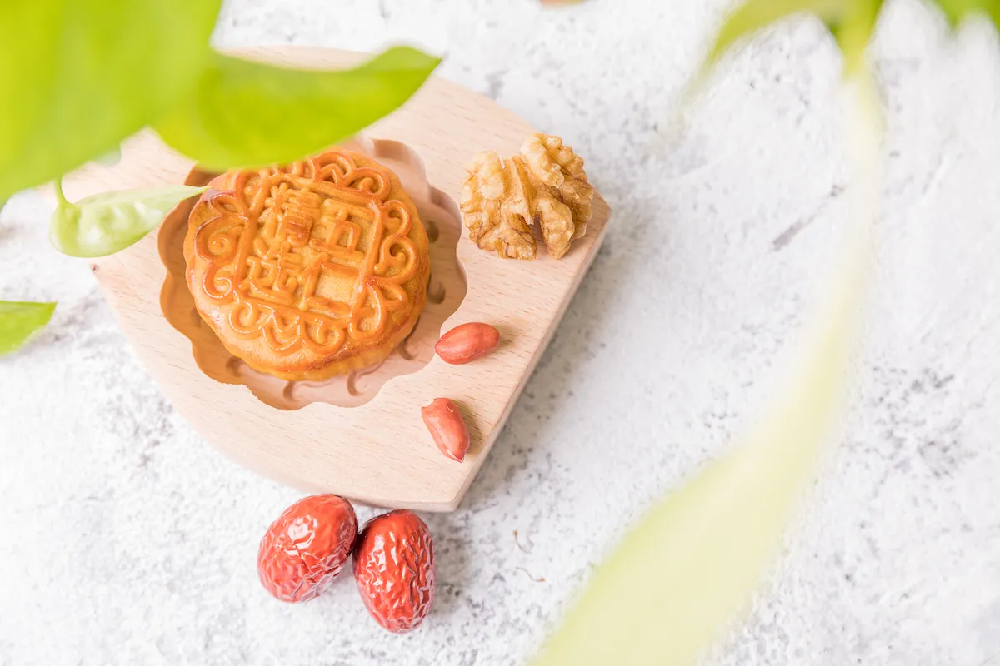
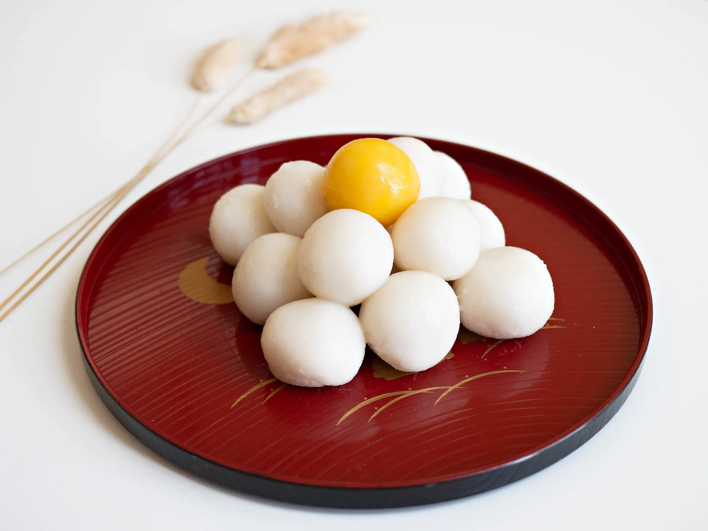
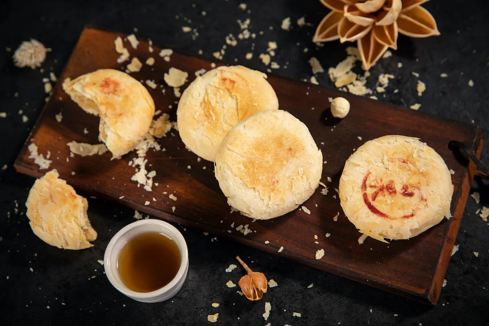
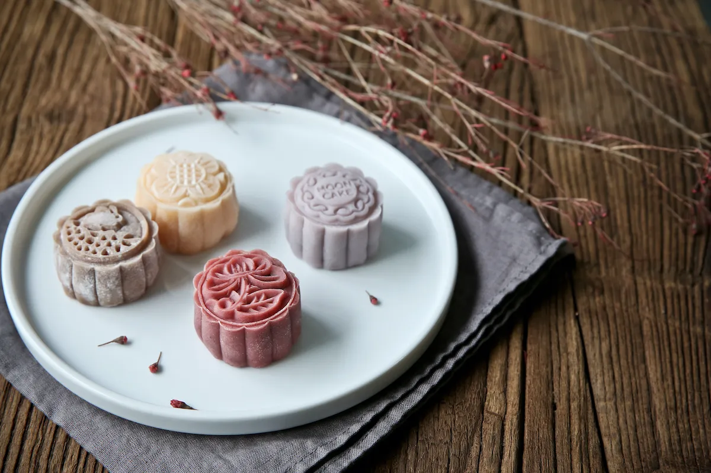
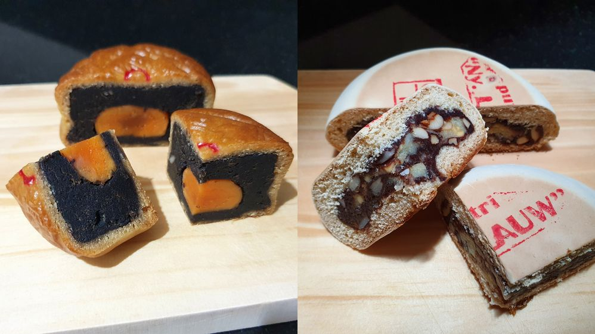
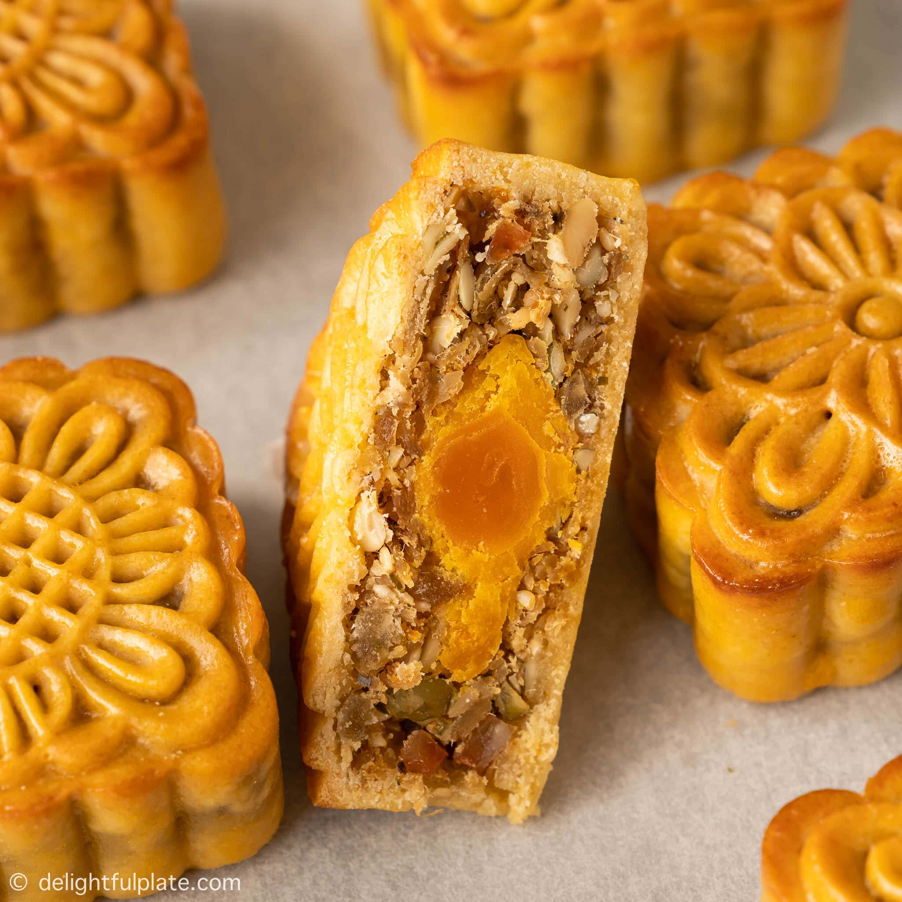
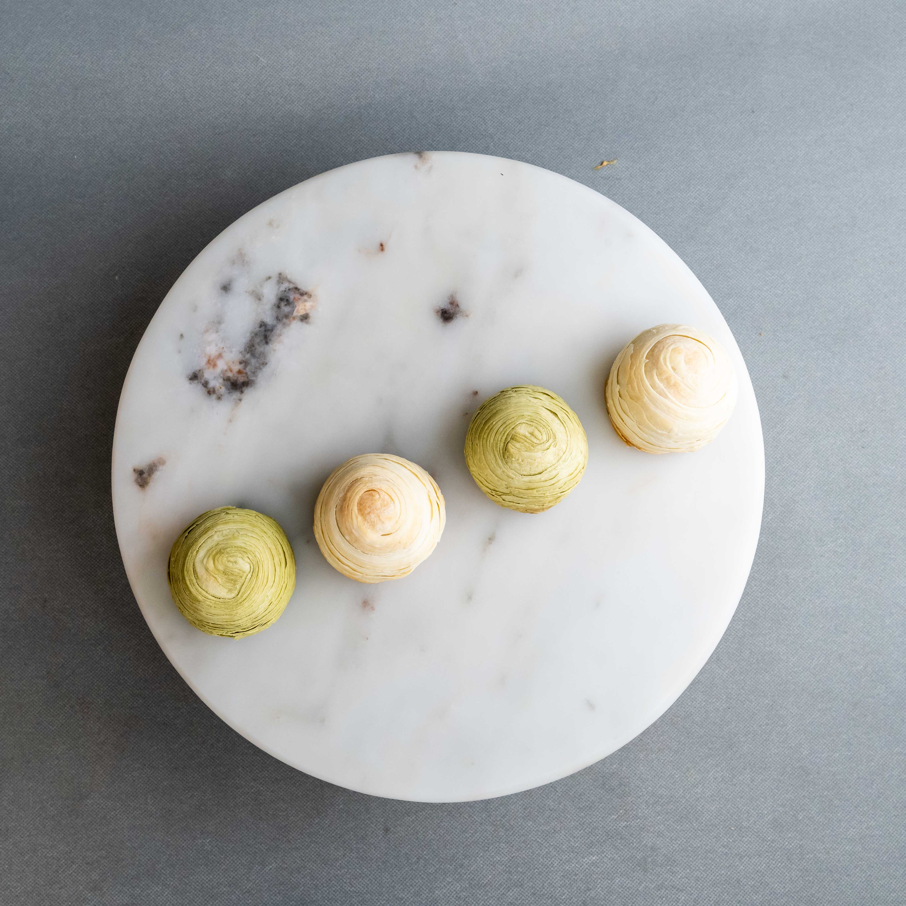

Cantonese mooncake has multiple variations and is the most famous regional style of the mooncake. The ingredients used for the fillings are various: lotus seed paste, melon seed paste, nuts, ham, chicken, duck, roast pork, mushrooms, egg yolks, etc. More elaborate versions contain four egg yolks, representing the four phases of the moon.
Tsukimi dango is made up of 15 rice dumplings to represent the 15 nights, Tsukimi is a time to express gratitude for the year's harvest, it's only natural that dango made from rice flour. Traditionally they are stacked in a pyramid shape on top of a small wooden Shinto offering stand called a "sanbo" and displayed in a place with a good view of the moon. After displaying Tsukimi Dango for hours or a day, the dumplings may have become hard to eat, you can cut and toast it in the oven toaster or frying pan then coat the dango with sweet soy glaze (mitarashi sauce)
Suzhou-style mooncake: This style began more than a thousand years ago, and is known for its layers of flaky dough and generous allotment of sugar and lard. Within this regional type, there are more than a dozen variations.It is also smaller than most other regional varieties. Suzhou-style mooncakes feature both sweet and savory types, the latter served hot and usually filled with pork mince.
Snow skin mooncakes are a non-baked mooncake originating from Hong Kong.The crust of snow skin mooncake is made of glutinous rice, which is frozen.While traditional mooncakes are usually filled with salted duck egg yolks and lotus seed paste or red bean paste, snow skin mooncakes can be filled with a variety of fillings such as mung bean paste, fruit, green tea, jam, strawberry, chocolate, coffee, cheese. Other flavored fillings include durian, sesame, mango pomelo sago, and purple yam.
In Indonesia, there are several main types of mooncakes,from the traditional to the modern mooncakes. The very traditional mooncake has been there ever since the Chinese and Japanese entered Indonesia, they are circular like a moon, white and thinner than regular mooncake. This type of mooncake is widely available all year long while the regular modern mooncakes are usually only sold around the mid-autumn festival season.
Vietnamese mooncakes have two basic parts: crust and filling. The ingredients usually consist of: jam, dried sausage, mung bean paste, salt, sugar, cooking oil, sugared lard, lotus seed, watermelon seed, etc. Compared to other variants, Vietnamese mooncake's flavor is more on the sweet side. Traditional Chinese cakes use glutinous rice flour filled with pure red bean paste and salted eggs or char siu while traditional Vietnamese mooncakes are a mixture of sugar, fat, melon seeds, lime leaves, sausage or dried chicken, pumpkin jam, lotus jam, and roasted sesame.
Thai mooncake consists of a thin crust which is filled with a variety of ingredients depending on the cook’s preference. The top of the mooncake is usually decorated with something creative, text, or symbolic designs during the holiday. Initially, mooncakes were only consumed during the festival.
